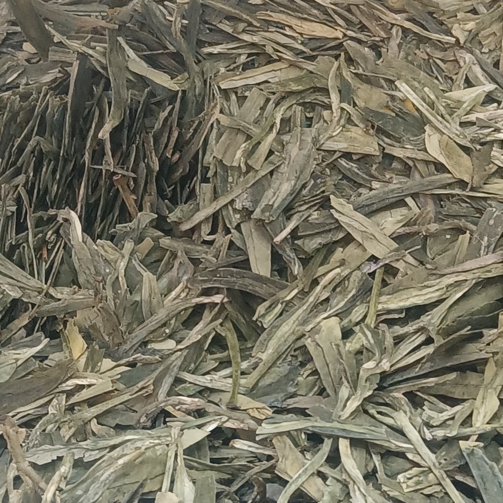
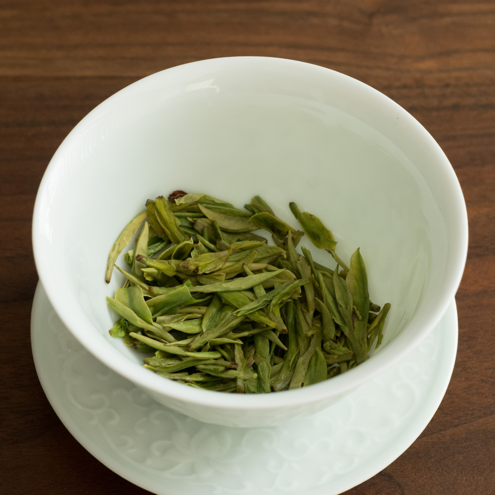
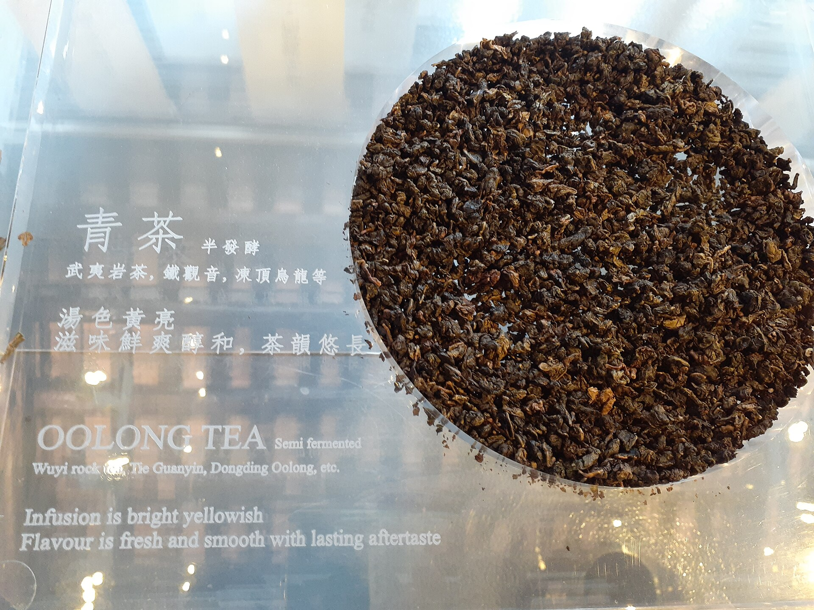

Fresh tea drinks trend feature
“Low sugar,” “lighter burden,” and “cleaner ingredient lists” have become some of the most powerful phrases in modern Chinese drink culture. This is partly a health story, but not only a health story. It is also about self-control, consumer psychology, and how people want to justify repeat beverage purchases in a more anxious era.
If you look at the Chinese beverage landscape over the last few years, one of the clearest shifts is that sugar is no longer just a taste issue. It has become a moral and psychological issue. Drinks are now evaluated not only by flavor, visual appeal, or brand heat, but by whether they feel heavy, regret-inducing, or difficult to explain to oneself. The rise of low-sugar tea drinks sits exactly inside this shift. Consumers are not merely asking whether a drink is enjoyable. They are asking whether it feels survivable as a habit.
This helps explain why tea drinks are such a strong vehicle for the low-sugar trend. Tea already carries a less guilty public image than many visibly sugary beverage categories. Once brands combine tea with language like low sugar, cleaner ingredients, original tea base, or lighter burden, they create a very effective loop: the drink not only appears more disciplined than a conventional sweet beverage, but also becomes easier to narrate as part of a manageable daily lifestyle.

Because sweetness itself has changed social meaning. In an earlier mass beverage environment, more sweetness often simply meant more pleasure or stronger flavor payoff. Today, sweetness is also tied to burden, body anxiety, energy load, and a loss of adult self-management. This means modern beverage brands can no longer win only by maximizing indulgence. They increasingly have to lower the anticipated emotional cost of consumption.
Tea-drink brands are especially well positioned to do this because tea already has a symbolic advantage. It can be framed as more natural, more controlled, more ingredient-conscious, and less childish than heavily sweetened alternatives. In this sense, the low-sugar tea-drink boom is not random. It is a very good fit between a changing consumer mood and a beverage category that can absorb that mood into its identity.
In practice, both are present, but the second is often stronger. Strict health would require careful attention to sugar quantity, energy load, serving size, milk base, toppings, and frequency of consumption. The feeling of health is easier to manufacture. Terms such as light milk tea, 30 percent sugar, no cane sugar, real tea base, or cleaner recipe all help consumers feel that a drink belongs to a more responsible category, even when the actual nutritional difference may be narrower than the branding suggests.
This does not make the entire category fake. Some drinks truly are lighter than others. But low-sugar tea-drink culture also reveals how modern consumers increasingly purchase self-justification. What they often buy is not a certified health outcome, but a product that can be narrated as “probably better than what I used to drink.” That distinction matters. It explains why the trend is culturally powerful even when the nutritional reality is uneven.

Because modern consumers are more trained in this language than before. Social media, fitness culture, wellness content, and “light养生” style discourse have normalized looking at sugar, sweeteners, additives, and ingredient lists. Even when people are not deeply educated in nutrition, they increasingly carry a simplified heuristic: shorter lists feel safer, less sugar feels safer, industrial-sounding ingredients feel riskier.
Once that ingredient-list consciousness becomes common, brands have to respond not only through formulation but through communication. A product must sound cleaner as well as taste acceptable. It must be defensible on screen, in conversation, and in self-talk. Low-sugar tea drinks succeed in part because they are excellent vehicles for this kind of communicative cleanliness.
Modern tea chains are built for repeatable daily consumption, not only for occasional spectacle. That makes “lighter burden” a highly valuable positioning tool. Consumers may not repeatedly buy intensely sugary, dessert-like drinks every workday, but they may very well buy something that feels flavorful, branded, and socially present while still appearing relatively controlled. Low-sugar tea drinks fill that repeatability zone.
This is commercially important. The drinks that become category anchors are not always the most outrageous or the most photogenic. They are often the ones consumers can purchase again and again without too much internal resistance. Low-sugar language lowers that resistance. It is as much a frequency technology as it is a nutrition technology.
One of the most interesting changes in Chinese drink culture is that tea drinks are increasingly functioning as everyday management tools rather than purely pleasure purchases. For many people, a low-sugar tea drink sits between two competing desires: the desire for something enjoyable and the desire not to feel excessive. The drink becomes a compromise device. It allows the consumer to have flavor, routine, mood, and a small treat without crossing too far into guilt.
This makes modern tea culture slightly closer to coffee culture in structural terms. The beverage is not only a product. It becomes part of daily scheduling, self-image, and recurring micro-choices. Tea, however, still carries a softer symbolic space than coffee: less aggressive, less overtly performance-driven, more compatible with the language of moderation. Low-sugar tea drinks benefit from that symbolic softness.

Saying “low sugar” alone is already becoming insufficient. Consumers will increasingly ask finer questions: is low sugar just a sweetener swap? Does a clean-sounding drink still carry a high energy load? Is the tea base meaningful, or decorative? Is the milk base still heavy? Are toppings quietly undoing the lighter narrative? In other words, the category is moving from low-sugar signalling to low-sugar credibility.
This raises the bar for brands and for readers. Brands have to make their claims and product structures align more convincingly. Readers need to learn how to distinguish products that are actually lighter from products that simply look or sound lighter. The boom in low-sugar tea drinks is unlikely to disappear soon, but it will become more sophisticated—and more contested.
That is why this topic matters. It is not just a beverage trend. It reveals one of the clearest contradictions in contemporary consumer culture: people still want pleasure, but increasingly want pleasure that can be morally and psychologically defended. Tea drinks have become one of the most accessible places where that contradiction is negotiated every day.
Source references: WHO: Healthy diet, CDC: Added sugars.